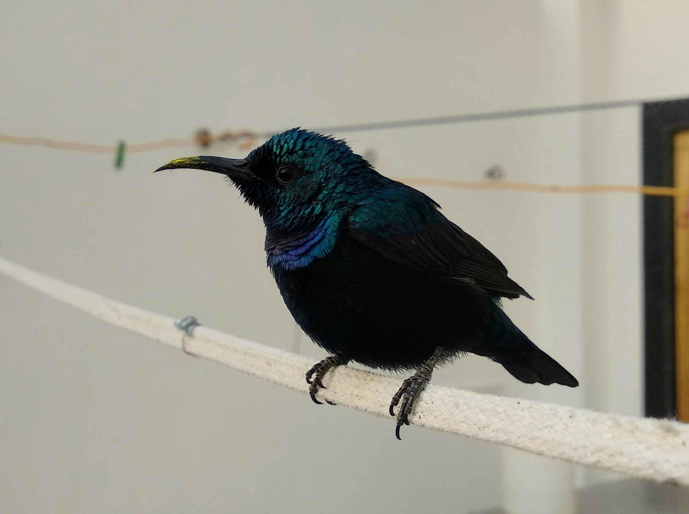

The Purple Sunbird is a tiny, active nectar feeder and one of the most familiar sunbirds in India. Breeding males can appear almost black in ordinary light but show brilliant purple, blue, and green iridescence when illuminated. Females are olive-yellow and much less conspicuous. The species is highly adaptable and occurs in gardens, forests, scrub, plantations, and cities wherever flowering plants provide food.